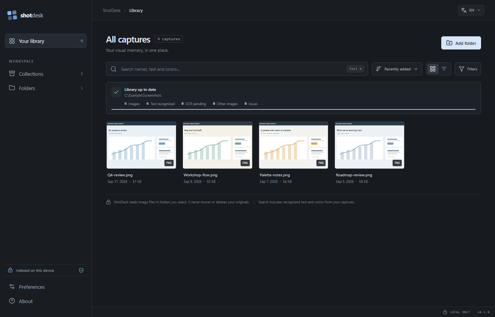

Find the screenshot by what it shows.
ShotDesk reads your chosen screenshots on your device, then lets you search the words, image details, and colors you remember.
01Chosen folders only
02SQLite FTS5
03No image uploads
review-notes.pngOriginal stays in its folder
01
Image facts1919 × 1031 · ratio · embedded EXIF
LOCAL02
Color paletteBlue · gray · white
LOCAL03
Text recognitionPP-OCRv6 · ONNX · on demand
LOCALSEARCH RESULT“Q4 review” finds this capture
FTS5After model setup, indexing works offline.NO CLOUD INDEX
See ShotDesk at work
Move through a few everyday moments in your screenshot library.
01/ 03
THE INDEXING PATH
A useful index, not another place to upload.
ShotDesk keeps a reference to each original file and builds a separate local index for the things you want to find.
Choose folders
Only folders you select enter the library. Originals stay where they are.
Analyze images
Dimensions, available EXIF fields, and dominant colors are read locally. GPS is not stored.
Search what you recall
Find captures by filename, folder, OCR text, or color names in English and French.
WHAT THE LOCAL INDEX STORES
Useful facts, kept close to the image.
FieldSourceUseful for
Dimensions & ratioDecoded pixelsIdentifying screen size and orientation
EXIF / DPIEmbedded metadataCamera facts and resolution, when present
Dominant colors64 × 64 sampleSearchable color names and palette chips
Recognized textPP-OCRv6 small · ONNXSearch text within the screenshot
Search indexSQLite FTS5Names, paths, text, and color aliases
LOCAL BY DESIGN
YOUR SCREENSHOTS STAY YOURS
No account. No upload. No moved originals.
The SQLite library, thumbnails, collection membership, and OCR results are stored on this device. OCR models download only when you enable text search; after setup, recognition can run offline.
- Images are never sent to a cloud service.
- GPS coordinates are not stored.
- Remove a folder from the index without deleting its files.
A few practical answers
What is ShotDesk?
ShotDesk is a desktop app for building a searchable, local library of screenshots. It can search filenames, folders, recognized text, and dominant colors.
Are screenshots uploaded?
No. ShotDesk indexes selected folders on your computer. The originals stay in place and are not uploaded. OCR models are downloaded on demand; recognition runs locally afterward.
Which systems are supported?
The current preview provides Windows x64 installers and Linux x86_64 .deb and .rpm packages. Linux packages are built on Ubuntu 24.04 and need validation on each distribution.
Does text search work immediately?
Text search requires a one-time download of checksum-verified PP-OCRv6 models. Filename and color search do not require OCR.
EARLY PREVIEW
Try ShotDesk and follow its progress.
Download the current preview, read what changed, and share feedback with the project.